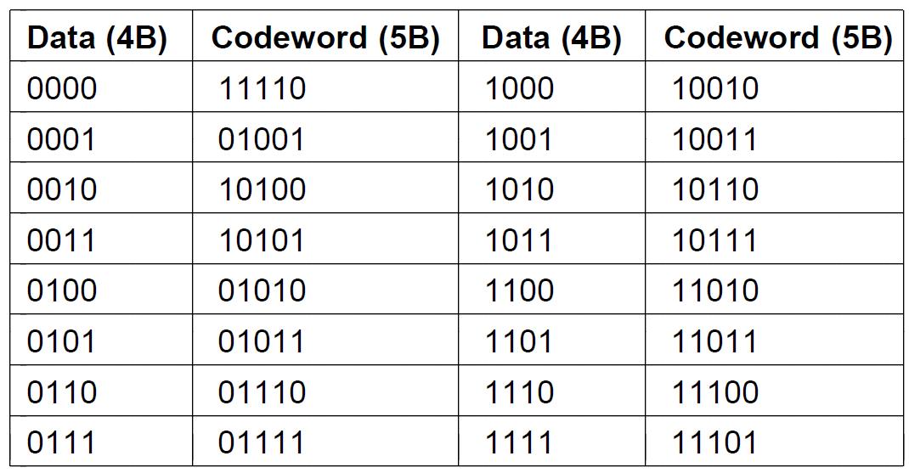

Computer network--物理层
1 数据通信的理论基础
1.1傅里叶分析
任何一个行为合理周期为T的函数g(t)，都可以表示成正弦函数和余弦函数组成的无穷级数
其中$f=\frac{1}{T}$是基本频率，$a_n$和$b_n$是n次谐波的正弦振幅和余弦振幅,c是常数
1.2 带宽有限的信号
我们考虑一个特殊的例子：
传输ASCII字符b,这个字符被编码成一个8比特长的字节，01100010
可以得到系数
所有传输设施在传输过程中都要损失一些能量
如果所有傅里叶分量都等量衰减，则结果信号将会在振幅上有所减小，但形状不会变。
但是，实际情况是，所有传输设施对于不同傅里叶分量的衰减程度并不相同，这会导致接收端接收到的信号发生变形。
一般对导线来说，在[0,$f_c$]的频率范围，振幅在传输过程中不回衰减，而在$f_c$这个截止频率之上的所有频率的振幅都会有不同程度的减弱。
这个在传输过程中振幅不回明显减弱的频率的宽度就称为带宽
但是截止频率不是一个突变的量，不是说到达某个阈值，振幅就突然减弱了，所以通常引用的带宽是指从0到接收能量保留一半到那个频率位置
带宽是传输介质的一种物理特性，取决于介质
一般将从0到某个最大频率的信号称为基带信号，将被搬移并占用某个更大频率范围的信号称为通带信号
带宽很低，会发生什么？
如果带宽很低，则只有几个最低频率才能被传输
假设比特率为$b$ bit/s[每秒发送8个比特]
则发送8个比特所需要的时间是$\frac{8}{b}$秒
所以第一个谐波频率是$\frac{b}{8}$赫兹
如果截止频率是3000hz,则可以通过的最高谐波数为
如上图所示，如果能发送的频率数很少，我们就没办法精确表示周期函数
1.3 信道的最大数据速率
波特率[baud rate/ symbol rate]
波特率指的是信号每秒钟电平变化的次数，单位是Hz
比特率
信号每秒钟传输的数据的位数。计算机中数据都是用0，1表示的，所以比特率也就是每秒钟传输0和1的个数，单位是bps[bit per second]
波特率和比特率的关系
我们可以假设一个信号只有两个电平，那么这个时候可以把低电平理解为“0”，高电平理解为“1”，这样每秒钟电平变化的次数也就是传输的0，1个数了，即比特率 = 波特率。
但是有些信号可能不止两个电平，比如一个四电平的信号，那么每个电平就可以被理解成“00”，“01”，“10”，“11”，这样每次电平变化就能传输两位的数据了，即比特率 = 2 × 波特率。
一般的，$bit\,rate = buad\,rate × log_2V$，这里V就是信号电平的个数。
Nyquist证明：如果一个任意信号通过一个带宽为B的低通滤波器，那么只要进行每秒2B次确切采样[一个周期采样2次]，就可以完全重构出被过滤的信号
不考虑噪声，如果信号包含了V个离散等级，那么公式可以写为
[最大symbol rate=$2B\,symbol/s$]
每秒采样2B次，也就是采样了2B个电平信号
也就是采样了2BlogV个bits
事实上，要想重构出信号，每秒2B次采样是不够的，要多一些才够。
接下来考虑如果存在随机噪声
通常将其写成对数形式$10log_{10}\frac{S}{N}$,单位为分贝.
香农得出：对于一条带宽为B赫兹，噪声比是$\frac{S}{N}$的有噪声通道，他的最大数据传输速率是.
2 引导性传输介质[有线传输]
物理层的作用是将bit从一条机器传输到另一台机器。传输所用的物理介质会在传输带宽、延迟、成本等方面产生差别。
可以将介质分为
- 引导性介质：如铜线、光纤
- 非引导性介质：如卫星、激光
2.1 磁介质
Never underestimate the bandwidth of station wagon full of tapes hurtling down the highway.
2.2 双绞线
构成
双绞线由两根铜线以螺旋状的形式紧紧地绞在一起。
之所以要绞在一起，是因为这样不同电线产生的干扰波会相互抵消，显著降低电线的辐射。
并且，信号以两根电线的电压差来承载，这样对外部噪声有更好的免疫力，因为噪声对两根电线的干扰是相同的，因此电压差不会改变。
双绞线既可以传输模拟信号，也可以传输数字信号。
传输方向：
- 全双工链路[full-duplex]：可以双向同时使用的链路
- 半双工链路half-duplex]：可以双向使用但一次只能使用一个方向
- 单工链路[simplex]：只允许一个方向上传输
双绞线的type:
– Category 5 [100Mbps, 1Gbps]
– Category 6 [10Gbps]
– Category 7 [Shielded Twisted Pair]
双绞线的缺点是：
传输距离远的话，信号衰减很厉害，需要使用中继器
2.3 同轴电缆[coaxial cable]
构成：
硬的铜芯，外面包上一层绝缘材料，绝缘材料的外面是网状圆柱导体，外层导体再覆盖上一层保护塑料外套
特点：
同轴电缆的结构和屏蔽性使得它既有很高的带宽，又有很好的抗噪性。
这点比双绞线更优秀，因此也比双绞线传的远
2.4 电力线[power line]
2.5 Fiber optics
Types:
Multimode多模：many different rays
Unimode单模：single rays, longer distance
Transmission of light through fiber:
-Attenuation [衰减] of light through fiber in the infrared region.
– Three wavelength bands are used for optical communication. They are centered at 0.85, 1.30, and 1.55 micros [微米].
光缆：
构成：
中间core是玻璃芯，光秒冲通过它传播
玻璃芯外面是一个玻璃覆盖层[cladding]，覆盖层的折射率比玻璃低，这样可以限制所有光都限制在玻璃芯内[全反射]
最外面是一层塑料封套[jacket],用来保护里面的玻璃包层
光纤通常被扎捆成束，最外面再加一层保护套
信号源一半有两种光源：发光LED和半导体激光
光纤和铜线的比较
– Advantages
- Higher bandwidths and Low attenuation.
- Not being affected by power surges, electromagnetic interference, or power failures.
- Not affected by corrosive chemicals in the air.
- Thin and lightweight.
- Fibers do not leak light and quite difficult to tap.
– Disadvantages
Less familiar technology.
要求较高的操作技能，光纤被过度弯曲容易折断
Fiber interfaces more expensive.
– Conclusion: For new routes [longer ones], fiber win
3 无线传输
3.1电磁频谱
由香农定理我们知道一个电磁波的信号能够携带的信息量与带宽成正比，从图中可以看到光纤带宽是多么宽
Some spread its frequency over a wide frequency band[spread spectrum, 扩频].
– Frequency hopping spread spectrum [military, 802.11, Bluetooth]
– Direct sequence spread spectrum [3G mobile phones]
– UWB [UltraWideBand]
3.2 Radar
3.3 Radio transmission
[a] In the VLF, LF, and MF bands, radio waves follow the curvature of the earth.
[b] In the HF band, they bounce off the ionosphere [电离层].
3.4 Microwave transmission
4 数字调制与多路复用
什么是数字调制？
比特与代表他们的信号之间的转换过程称为数字调制
我们首先来看如何把比特直接转换成信号的方案，这些方案导致了基带传输
基带传输是指：信号的传输占有传输介质上从0到最大值之间的全部频率
然后我们看通过调节载波信号的幅值、相位或者频率来运载比特的模式，这些方案导致了通带传输
通带传输是指：信号占据了以载波信号频率为中心的一段频带
信道通常被多个信号共享，这种信道的共享形式称为多路复用技术
多路复用技术可以通过：时分复用、频分复用、码分复用 实现
4.1 基带传输
NRZ
翻转代表1，不翻转代表0
一旦NRZ信号被发出去，它沿线缆传播。另一端的接收器以一定周期对信号采样，然后把采样信号转换成比特。
Problem:
a long run of 0s or 1s leaves the signal unchanged.
After a while it is hard to tell the bits apart, as 15 zeros look much like 16 zeros unless you have a very accurate clock.
Accurate clock:
For all schemes that encode bits into symbols, the receiver must know when one symbol ends and the next symbol begins to correctly decode the bits.
一般来说，accurate clock是很难做到的，那么我们该怎么办呢？
Clock Recovery
一种方法，额外拉一根时钟线，给接收器发送单独的时钟信号
这个方法不好，因为这很浪费，用一根额外的线来发送时钟，还不如用它来发送数据呢
- A clever trick is to mix the clock signal with the data signal by XORing them together so that no extra line is needed.→Manchester Encoding
Manchester Encoding的方法是，时钟的频率是比特率的两倍，也就是在一个bit 时间内，时钟会产生一次跳变。时钟XOR bit，产生输出
如上图所示
第一个bit时间t内，传输的bit是1，时钟在[0,t/2]内是0，与bit 1异或，编码成1;
在[t/2, t]内时钟跳变到1，与bit 0异或，编码成0.
因此我们在第一个bit时间看到的编码先是1后翻转到0
问题：需要两倍于NRZ的带宽，一个bit时间他要传输两个信号
- As a step in the right direction, we can simplify the situation by encoding a 1 as a transition and a 0 as no transition, or vice versa.→NRZI [Non-Return-to- Zero Inverted,不归零倒相制, Used in USB]
NRZI方法是：编码有跳变表示1，编码无跳变表示0
这样，再长的一串1都不会产生时钟恢复问题；但是一长串的0仍然有问题
Problem: long runs of 0s?→4B/5B
4B/5B的方法是：每4个bits被映射成一个5bits的模式，映射按照一张固定的转换表进行，5bits的选择使得映射结果永远不会出现连续3个0
 问题：增加了25%的带宽
4.2 通带传输
一般情况下，我们在一个信道上发送信息使用的频率范围并不是从0开始的。对于无线信道来说，发送非常低频率的信号不切实际，因为天线的大小与信号的波长成比例，低频信号需要很大的天线。
发射频率一般是由监管约束和避免干扰的需要决定的
4.2.1 数字调试
A 幅移键控[ASK, Amplitude Shift Keying]
通过采用不同的振幅表示0和1
如上图(b)所示，这里采用非零幅值和一个零幅值
B 频移键控[FSK, Frequency Shift Keying]
采用两个或更多的频率
如上图[c]所示，使用两个频率表示0和1
C 相移键控[PSK, Phase Shift Keying]
在每个符号的周期中，系统把载波波形偏移0度或者180度。由于只有两个相位，这种调制方法称为二进制相移键控[BPSK]，这里的二进制表示的是两个符号
如上图[d]所示，使用两种相位量表示0和1
当然，我们可以用更多数量的偏移。比如用4个偏移，45，135，225，315，那么每个符号可以表示2bit。这种称为正交相移键控[QPSK, Quadrature]
D 集大成者
我们可以综合以上调制方式，使得每个符号表示更多的bit.
我们选择综合振幅和相位。为什么不考虑频率呢？因为频率和相位有关
我们给出星座图
一个点的相位是以他为起点到原点的线与x轴正方向的夹角
一个点的振幅是他到原点的距离
如图[b], QAM-16：
一共有16个符号，16个符号可以表示出4bits的所有组合
因此一个符号可以传输4个比特
同样，如图[c], QAM-64
一共有64个符号，一个符号可以传输6bits [..$2^6=64$]
4.3 Multiplexing
4.3.1 频分复用[FDM,Frequency Division Multiplexing]
利用通带传输的优势使多个用户共享一个信道。
FDM将频谱分成几个频段，每个用户完全拥有其中一个频段来发送自己的信号
正交频分复用[OFDM,orthogonal]
信道带宽被分成许多独立发送数据的子载波，每个子载波之间频率的间隔是$\Delta f$
每个子载波发出的信号虽然可以扩散到相邻子载波，但是每个子载波的频率响应被设计成在相邻子载波的中心为0。因此，可以在子载波中心频率采样而不会收到其邻居的干扰
4.3.2 时分复用
用户以循环的方式轮流工作。每个用户周期性获得整个带宽非常短的一个时间
4.3.3 码分复用
传输一个bit的时间被划分成m个更短的时间间隔，称这个时间间隔为码片[chip]。每个站分配得到唯一的m位码，称为 码片序列
如果要发送bit 1,站就发送分配给他的码片序列；如果要发送bit 0,站就发送分配给他的码片序列的反码。
m=8,即一个bit时间传输的码片序列是8位的。
如果A站分配到的码片序列为[-1-1-1+1+1-1+1+1]
那么如果A想发送bit 1，就发送码片序列[-1-1-1+1+1-1+1+1]
如果A想发送 bit 0, 就发送码片序列[+1+1+1-1-1+1-1-1]
码片序列的要求：
所有的码片序列都要两两正交
A,B,C,D 是发送信号的4个station，他们的码片序列两两正交。
S1,S2,…S6是6个例子,S6表示这个比特时间A,B,D发送了bit 1，C发送了bit 0。但是我们收到的是S6这个不同站的信号都混淆在一起的整体。怎么把C站发送的比特提取出来呢？
方法是S6与C做归一化内积。即$S_6\cdot C=[2-2+0-2+0-2-4+0]/8=-1$
因此我们知道在S6所处的这个比特时间内，C站传输了bit 0。
内积结果
=1 说明该站发送了 bit 1
=-1说明该站发送了bit 0
=0 说明该站没有发送数据
5 公共电话交换网络
How to connect computers?
For small number of computers and a local area
- LAN
For a large number of computers or a wide area or lacking right of way
- PSTN [Public Switched Telephone Network]
5.1 Structure of the Telephone System
电话网络的变迁
Bell system model
Levels:
- End office 本地局
- toll office 长途局
- primary office 初级局
- Sectional office 地区局
- Regional office 区域局
Major components
Local loops [本地回路]: 进入家庭和公司的模拟双绞线
Trunks [干线]: 连接交换局的数字光纤
Switching offices [交换局]:电话呼叫在这里从一条中继线被接入另一条中继线
5.1 本地回路：调制解调器、ADSL、光纤
A 电话调制解调器
要在物理信道上发送比特，必须把比特转换为可以在信道上传输的模拟信号。这个方式我们在上一节已经学过。
在信号的另一端，模拟信号要被还原成比特
调制解调器
是什么
执行数字比特流和模拟信号流之间转换的设备就是调制解调器[modem]
调制解调器是调制器[modulator]和解调器[demodulator]的缩写
本博客所有文章除特别声明外，均采用 CC BY-SA 4.0 协议 ，转载请注明出处！